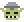
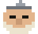
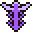
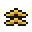
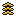

> orkUI / office
Type
Title 16/20 pixel
Heading 14/16 pixel
Label 12/16 pixel
Button 13/16 pixel
Body 12/18 text: More people try Orkline. Считаем установки каждую неделю. 0123456789 $20.00
Caption 11/16 text: A goal asks · waits for idea 12
Buttons
| rest | hover | pressed | focus | disabled |
|---|
| default | | | | | |
|---|
| primary | | | | | |
|---|
| danger | | | | | |
|---|
| warning | | | | | |
|---|
| quiet | | | | | |
|---|
Rows, cards, chips, labels
Selectedraised, a 2 px bar
Needs youTarget: Balance33
merged into dev
needs your answer
tests failed
Meters, pips, hatching
37 % 83 % 97 %
Gem (a price or a mark; 22 px, 24 on a phone)
$0.38$1–2?
!—·
$1–2 Plan ready ? Asks you ! Failed
— Proposed
Stat (a measured number)
5/16/2$0.38
≈$0.403
5/1 runs / sent back
$0.38 a run
Crystals (what is left of a tool)
70 %
60 %, the last kept
0 %
hatched: kept for tonight
Frame (the double frame of a raised thing)
$1–2Plan ready2 tasks, 1 check
?Asks youalert edge
!Faileddanger edge
Elements (a goal's mark; 14 and 28 px)
meadow
ice
dust
void
lava
meadow dim
meadow
ice
dust
void
lava
meadow dim
Fewer steps to install
3 of 5 tasks
Faster first run
waits for main
New goal
not yet read: dim
Signs (every symbol the window draws; 14 and 28 px)
inkmutedsuccessdangeralert
check
cross
work
night
alert
flag
before
after
done failed at work tonight asks you is in main waits for the build 2 wait for it
Dialog, menu, toast, key line, think
Saved.Taskmaster thinking
Esc close tabCtrl+Enter send
Icons (Pixelarticons, 24 px; the chevrons are this look's own)
arrow-leftarrow-rightcheckcheckboxclockclosecoinseyefileflagfoldergit-mergelightbulblinklist-boxmapmoonmore-horizontalpencilphoneplayplusrobotsearchsliderssquare-alertstoptrashwarning-diamond
Races (laborer, warrior, elder; 48 x 44)
A race beside its word
elf elder
peon warrior

goblin warrior, small
needs your answer
A head at 36 x 33 (mid; 3 px a cell)
small 12 x 11

mid 36 x 33
big 48 x 44
peon warrior
peon warrior
knight elder
Marks (the AI tools and the levels; 16 and 32 px)
Claude
Codex
Antigravity
Cursor

Hermes
Pi
Pipeline
Novice

Seasoned

Veteran